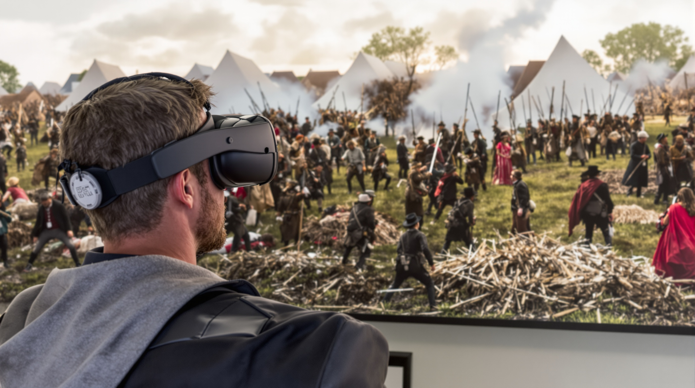
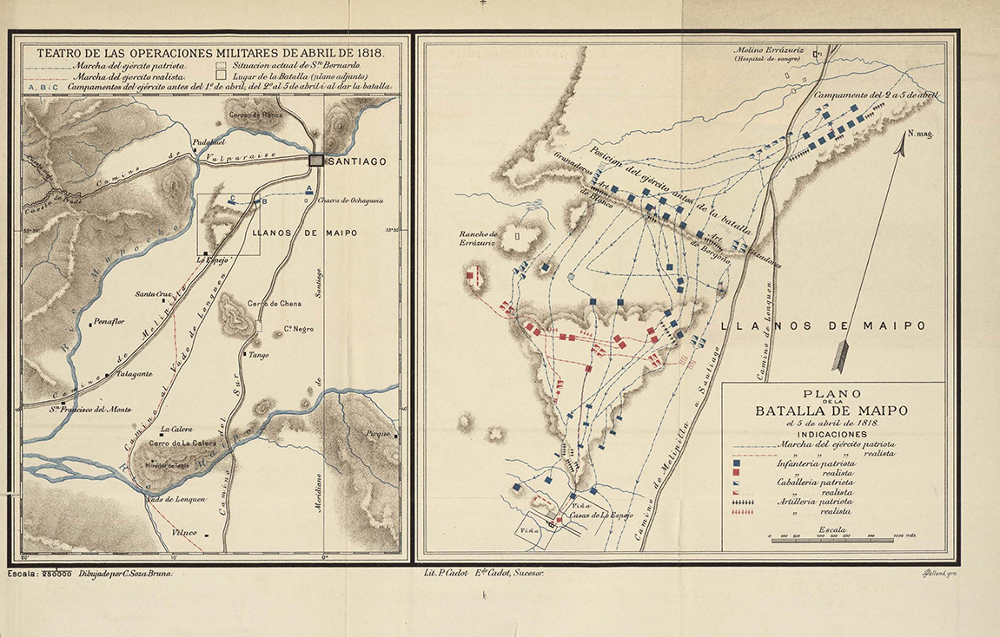

Vive la Batalla de Maipú en una experiencia inmersiva de realidad virtual. Observa las formaciones tácticas, las maniobras y revive la historia como si estuvieras allí.
Simulador táctico
Selecciona una estrategia para visualizar un resultado textual (prototipo). En producción, esto controlará una animación en el mapa.
Resultado aquí...
Mapa
Representación táctica de posiciones y maniobras durante la Batalla de Maipú.